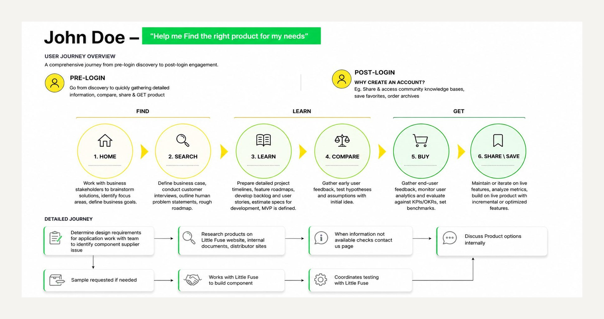
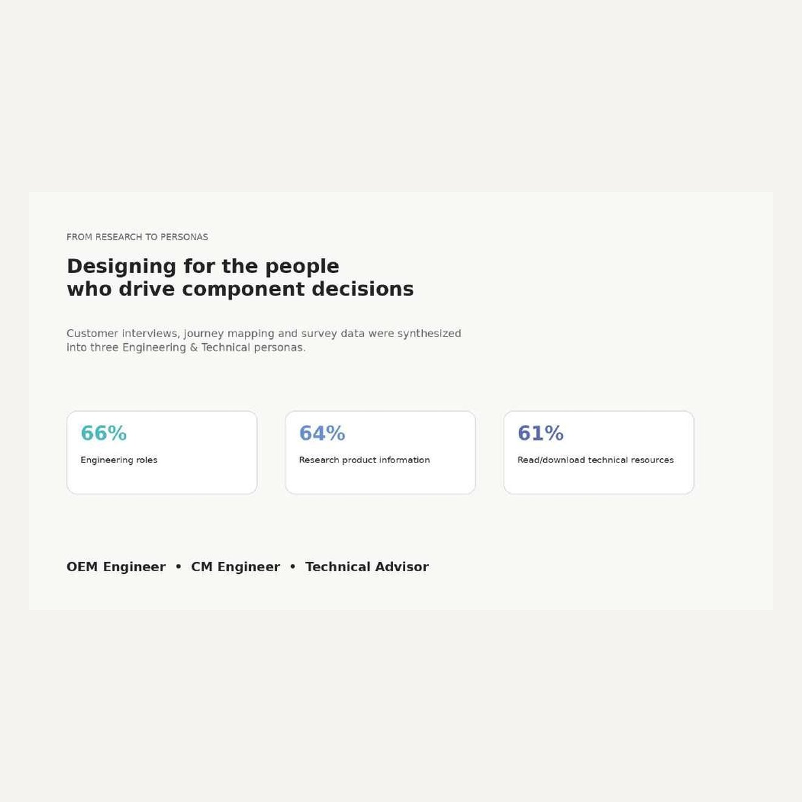
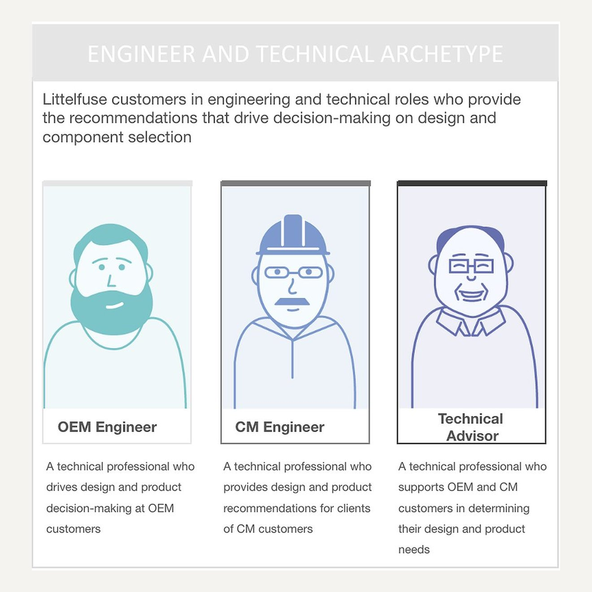
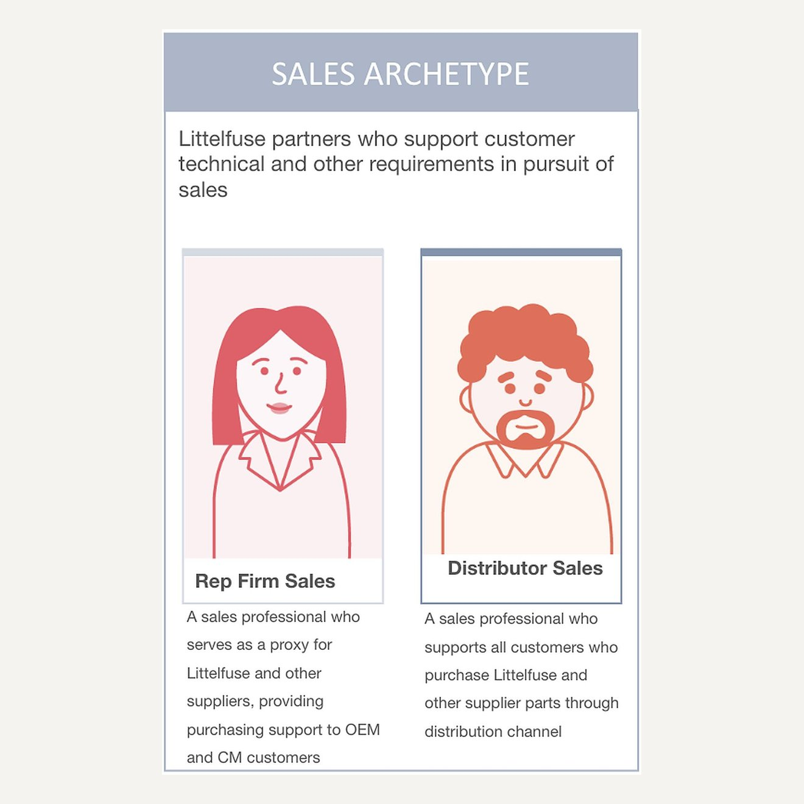
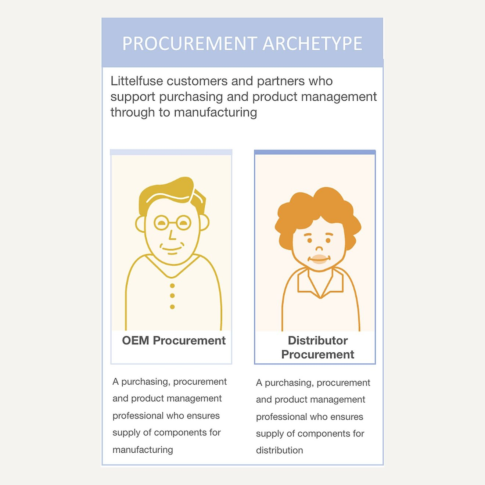
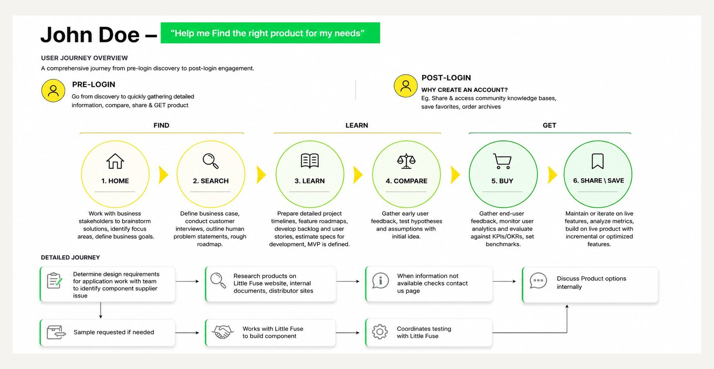

Reimagining How Engineers Discover Littelfuse Products

Project Overview
Littelfuse is a global technology manufacturing company that develops electronic components and solutions used across automotive, industrial, electronics, and other industries.
I worked with Littelfuse to improve its existing digital portal experience, with a focus on creating a more intuitive way for engineers to discover, evaluate, and access products across its extensive portfolio. The project aimed to evolve the portal from an experience largely organized around individual business units into a more customer-centered platform that could better connect users with relevant products and solutions across the broader Littelfuse ecosystem.
From a business perspective, the redesigned experience also created opportunities to increase visibility across product categories and support cross-selling and upselling.
The Challenge
Simplifying Product Discovery Across a Complex Product Catalog
Littelfuse offers an extensive portfolio of highly technical products across a wide range of industries and applications. However, the existing experience placed a significant cognitive burden on users during product discovery. When engineers did not know the exact stock number for a product, they often had to rely on broader search terms and navigate multiple paths to find what they needed.
Preliminary research provided by Littelfuse showed that 73.2% of users searched using an exact stock number, while others relied on broader product categories such as heaters, panels, sensors, and switches. These broader searches often failed to surface relevant results, requiring users to refine their queries or navigate deeper into the product catalog.
When asked about the ease of search, 48% of survey respondents said that while finding products was generally easy, it still took too much time to reach relevant results. Another 12% reported that the search experience was difficult and that they were often unable to find relevant products.
These findings highlighted an opportunity to reduce users’ reliance on exact product knowledge and create a more intuitive discovery experience—one that could help engineers narrow their options, identify the right product, and complete key tasks with less effort.
How Might We…
- How might we help engineers discover the right product without knowing an exact stock number?
- How might we connect engineers with relevant and complementary products across Littelfuse’s broader portfolio?
- How might we streamline key tasks—from comparing products and accessing technical documentation to ordering, requesting samples, and getting support?
The Approach
I began by reviewing existing customer research, business goals, and the end-to-end product-discovery experience. I translated those inputs into primary user needs, mapped the engineer’s pre-login journey, and audited the interface against the tasks users needed to complete—searching for a component, comparing options, checking stock, downloading technical information, and requesting samples.
The analysis exposed gaps in navigation, terminology, content pathways, and task continuity. These findings became the foundation for a simpler information architecture and more direct product-discovery flows.
Synthesized existing research and business priorities
In reviewing existing research I learned that the Little Fuse customers relied on the platform to complete one of these tasks: find and compare products, access technical documentation, check availability, request samples, and get support. Knowing that these were the common user flows and navigation paths I then began to understand who the primary Little Fuse Customer is.
Defined the primary user: a design engineer
Through stakeholder interviews, existing user research, and analysis of customer roles and behaviors, we grouped Littelfuse users into three primary archetypes: Engineering & Technical, Sales, and Procurement. These archetypes reflect the different ways users influence product selection—from engineers evaluating specifications and making design recommendations, to sales partners supporting customers, and procurement professionals managing purchasing and supply. In combination with quantitative survey data with customer interviews, stakeholder research we identify recurring behaviors, pain points and decision drivers that inform the experience strategy. The survey data found that 66% of respondents identified as being in an engineering role, compared with 12% Sales and 5% Procurement.This insight helped us prioritize the experience around engineers’ core tasks—finding the right product quickly, comparing options, accessing technical documentation, and confidently making component decisions—while still supporting the needs of Sales and Procurement users. The analysis of the survey data is what guided our work in completing detailed personas rather than working of static archetypes.




Mapped the product-discovery journey
The user journey was developed during a collaborative workshop at the client’s headquarters, bringing together key stakeholders to map how engineers move from identifying a product need to researching, comparing, testing, and selecting a solution. By documenting both the high-level journey and detailed decision points, we identified key behaviors, information needs, and opportunities to streamline the digital product experience.

Audited critical tasks and interface pathways
Following the journey-mapping workshop, I evaluated the existing Littelfuse website against the needs and behaviors identified in the user journey. The review focused on key paths engineers rely on to discover and evaluate products, revealing gaps in navigation, task flows, content structure, and interaction design.
01 — Navigation & Findability
Critical product actions—including Cross Reference, Check Stock, Where to Buy, and Request Samples—were inconsistently represented across the experience. We also identified unclear labeling and opportunities to make global search and language selection more intuitive.
02 — Incomplete Task Flows
Mapping core tasks exposed several points where the existing experience did not fully support the user's journey. The Check Stock flow, for example, contained missing screens and unclear paths for users who didn't already know a product or part number.
03 — Interaction & Content Gaps
The audit uncovered smaller usability issues that compounded friction, including inconsistent labels, unclear interface states, missing landing-page templates, misaligned interface elements, and controls without clearly defined behaviors.
Translated findings into design principles
Insights from the audit were translated into design principles focused on clarity, consistency, accessibility, and task completion. Existing wireframes were refined to create a more cohesive experience across desktop and mobile, including clearer navigation and labeling, improved menu hierarchy, accessible interaction states, standardized components, and more intuitive search and filtering patterns. These principles were applied consistently across the global header, mega menu, homepage, product pages, and supporting content modules.
The work also addressed gaps where the existing wireframes did not fully support critical user tasks. New and expanded flows were designed for global search, product discovery, Check Stock, Where to Buy, and privacy/GDPR interactions, while missing states, error handling, filters, links, and responsive behaviors were defined to make the experience development-ready. Below are the completed wire frames.
Desktop
Mobile
Scroll inside a phone to see the whole screen; click or tap to enlarge.
Fig. 08 — Hi-fi screens: nine desktop flows and the mobile designs
Results & Impact
The redesigned experience streamlined product discovery and evaluation across desktop and mobile, creating clearer pathways through search, navigation, and key purchasing tasks. Following launch, mobile logins increased by 6%, indicating stronger engagement with the improved mobile experience.
05
Reflection
This project introduced me to a highly specialized industry with a unique set of users and technical workflows. To design effectively, I invested additional time in secondary research—studying the competitive landscape, learning industry fundamentals, and understanding how products move from the warehouse into an online product database. That deeper investigation surfaced questions we hadn’t initially considered and ultimately led to additional discovery sessions with stakeholders. In hindsight, that extra effort became a strength of the project: stakeholders appreciated the attention to detail, and it reinforced for me that good UX sometimes means slowing down to fully understand a complex ecosystem before designing for it.
—